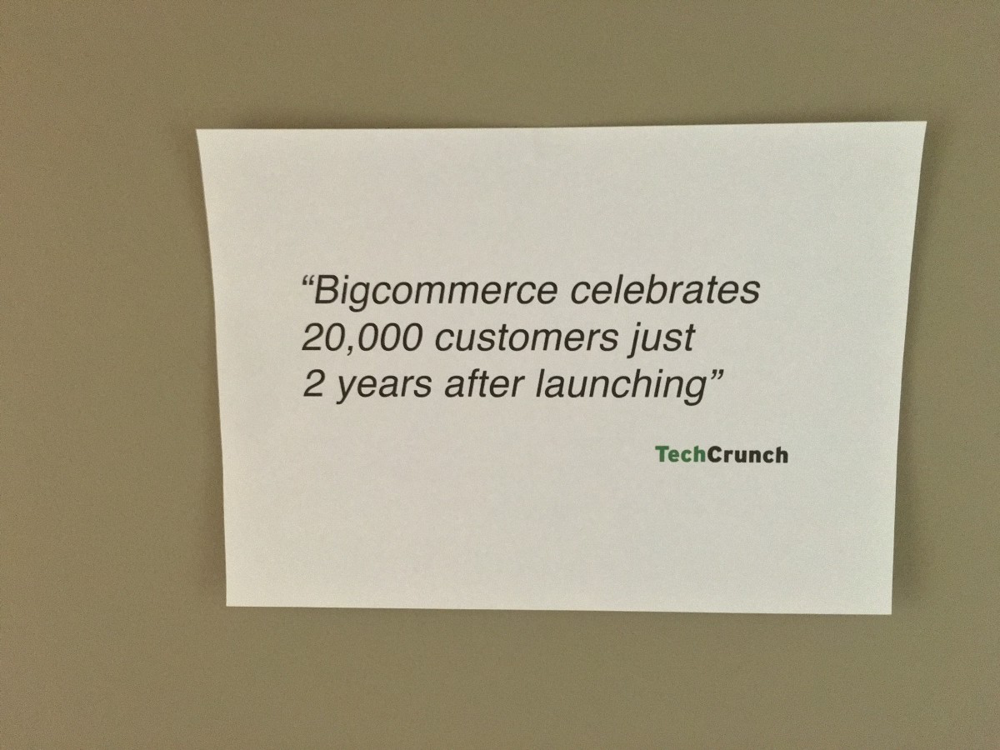
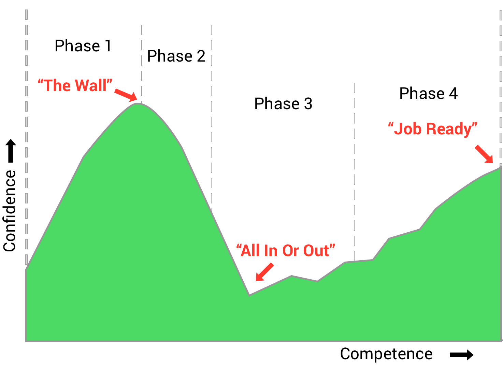

This article is for people with no coding experience at all.
My goal is to help you get started smoothly.
To avoid confusion: Software Developer = Developer = Programmer = Coder = Hacker
Let's get started!
To become proficient in coding takes a lot of time and there are no shortcuts. Don't trust a a book/bootcamp/online program which will make you a Software Developer in a few days.
Technical jargon
There is a significant amount of technical jargon that is defined by using other unfamiliar bits of even more technical jargon.
JavaScript is a high-level, dynamic, untyped, and interpreted programming language.
Wikipedia
Without knowing what high-level, dynamic, untyped or interpreted means, you have no chance to understand what JavaScript is. In order to know what high-level means, you need to understand what low-level is … the list goes on.
In simple words: JavaScript is a programming language used to make websites interactive.
Layers of Abstraction
Software builds on this idea of creating layers of abstraction. Programmers highly value efficiency - we don’t need to recreate the wheel. Sometimes the "wheel" created once and improved several times, is in such an optimized state that hardly anybody fully understands how it works. In the programming world that's totally fine, the only thing you have to know is, how to use the "wheel".
Let me give you a simple example:
My Blog is built in a way that the user experience is smooth on any kind of device. Developers call it "responsive". You can test it by changing the size of your browser window or using your phone/tablet to access the site. To make a website responsive is not easy, as every browser (Safari, Firefox, Chrome, Internet Explorer) displays websites slightly different. Fortunately there are smart guys who have already invented the "wheel". In this case the "wheel" is bunch of code gathered together in a framework (= code written by experts to save you time) called <%= link_to "Bootstrap", "www.getbootstrap.com" %>. I can simply use this framework on my website without paying intention how they solved all the complicated problems with the different browsers. I don't need to understand how they did it, I just need to know how I can use it. Especially at the beginning you will often see things you don't understand. Sometimes it's okay to skip them sometimes not. You will develop a high frustration tolerance.
Expectations are higher 15 years ago you just hacked in some html code (= programming language to develop a basic structure of a website without animations or other fancy stuff) and everybody was impressed by your skills. Nowadays your website must be at least responsive, connected to a database and well designed. To achieve this you have to be familiar with a variety of programming languages (HTML, CSS, JavaScript, Ruby) and even more frameworks (Bootstrap, JQuery, AngularJS, Rails/Flusk).
The programming world gets more complicated every day!
Number of programming languages is overwhelming Oh yes, there are plenty of programming languages and even more frameworks. They all have their right to exist and are useful in some way or the other. As a beginner it's tempting to just switch the language when you are get frustrated. On top of that there will always be someone who will tell you that you are using the wrong language or framework.
A lot of Resources/Tutorials address advanced programmers I see that more often lately. There are super beginner courses, which will teach you the core basics and then there is really advanced stuff. Therefor it can be quite frustrating as an intermediate programmer.
In all honesty, starting off really sucks!
With that being said…
Joel Spolsky who built Trello (super awesome team collaboration software) claims that there is a bright line between people with the "true mind" of a programmer and everyone else, who lacks the intellectual capacity needed to succeed in the field. That bright line consists, according to him, of pointers and recursion
You don't have to be a math genius to build great programms.
I think to be well organized will help you more than just being a genius.
Ok, we know that it will be difficult and also why.
But what can I do to eventually become successful?
Let's get some advice from a real expert.
“The key is deliberate practice: not just doing it again and again, but challenging yourself with a task that is just beyond your current ability, trying it, analyzing your performance while and after doing it, and correcting any mistakes. Then repeat. And repeat again. There appear to be no real shortcuts: even Mozart, who was a musical prodigy at age 4, took 13 more years before he began to produce world-class music.”
Peter Norvig, Director of Research at Google
He describes deliberate practice and patience as the two key elements. I couldn't agree more!
In his essay he mentioned some more advice:
Get interested in programming, and do some because it is fun. Make sure that it keeps being enough fun so that you will be willing to put in your ten years/10,000 hours.
Peter Norvig
I can garantee you, if you are not truely interested you won't make it. The best way to get interested in programming is to work on an actual project. I will come to this point later again in the "Get Started" section.
Talk with other programmers; read other programs. This is more important than any book or training course.
Peter Norvig
This describes exactly what I have experienced so far.
Nowadays we have a huge Open Source (=program code available for free) culture which makes it really easy to study other programs. Github gives you access to thousands of very well written and documented software projects.
Work on projects with other programmers. Be the best programmer on some projects; be the worst on some others. When you're the best, you get to test your abilities to lead a project, and to inspire others with your vision. When you're the worst, you learn what the masters do, and you learn what they don't like to do (because they make you do it for them).
Peter Norvig
Either way you will learn a lot. There are two cool ways to work with other programmers. Firstly you can participate in Hackathons. Hackathons are coding competitions which usually take place on weekends. You team up with random people and try to build a functional prototype in 48h - it is so much fun! Secondly you can contribute to Open Source Software and work in a team as well.
Work on projects after other programmers. Understand a program written by someone else. See what it takes to understand and fix it when the original programmers are not around. Think about how to design your programs to make it easier for those who will maintain them after you.
Peter Norvig
This is also huge! Just recently I did exaactly this. I picked the Bootstrap framework which we discussed at the beginning, extracted some pieces of the code, added some new features and now I am using it for my blog. This way I learnt a lot more about a language called "Sass" than by just reading tutorials.
I am going to cover the most common programming languages and will provide some advice on how you can get started.
We can simplify a web app down into 2 main parts: Front-end and back-end.
In simple words: The front-end is all the stuff you can actually see on a website like buttons, text, links, pictures and so on. In order to get the items at the right time at the right place can get pretty difficult. The back-end, however, describes all the things you can't see. Programmers also use the expression "server" for the back-end. The back-end (= your server) is responsible for the logic of your application. Is the user password correct?, The user wants to change his name, The user clicks on a link and wants to see a new page. The back-end is more complicated in terms of logical thinking. At the end you need both front-end and back-end.
Front-end programming languages
HTML, CSS, JavaScript
Front-end frameworks
jQuery, React, AngularJS, MeteorJS, …
Back-end programming languages
Ruby, Python, Java, php …
Back-end frameworks
Rails for Ruby, Flask and Django for Python,…
You can't say: "I will only learn the front-end part, because I don't like back-end." Then you won't understand half of the project implementation. You won't succeed with this strategy.
My advice is to learn the basics of HTML and CSS (both front-end) first. Then pick one, either front-end or back-end, and reach an intermediate level. Finally pick the other side front-end/back-end and reach an intermediate level as well.
Step by step plan with linked resources
HTML & CSS basics
Learn plain CSS without any fancy stuff like SASS/LESS.
Back-end basics
I personally started with Ruby as a language and Rails as a framework.
Go through this series and you definitely know the basics.
Front-end basics
You should already know the basics of HTML and CSS. Now you can go on with JavaScript as a language and jQuery as a simple framework.
I would recommend to use Sublime Text 3 as a text editor for the back-end and front-end development.
The structure is the same as for web apps. Even the back-end languages are the same. Only the front-end part is different.
Front-end
Swift (iOS), Java (Android)
Front-end frameworks
Cocoa Touch(iOS), I can't give solid advice for Android.
Back-end programming languages
Ruby, Python, Java, php …
Back-end frameworks
Rails for Ruby, Flask and Django for Python,…
My advice is to start with a the Front-end. It is the most important part and the most difficult part of a phone app. It is even possible to build fully functional apps without any back-end. These apps are called "offline" apps because they need no connection to a back-end (=internet). The back-end actually does not much different as for web apps. For web apps the back-end sends information in form of html files to the front-end. For phone apps the information is the same but it is sent in form of Json files (= simple file format like .doc)
Step by step plan with linked resources
Front-end
I don't know much about app development for Android devices. Thus I can only give advice for iOS. I can highly recommend the linked beginner course created by Apple.
Back-end
I would recommend to go through the web app courses first and then later dig deeper into the difference between web apps and phone apps on a back-end level.
I would recommend to use Sublime Text 3 as a text editor for the back-end development and Xcode for the front-end development.
At some point you will pay more attention to the look and feel of your projects. First I want to prevent you from a common misconception. UX (User experience) and UI (User Interface) Designer is NOT the same. The UX Desinger is responsible for the user flow within your app. He decides for example how the sign up process should work as oppsoed to the UI Designer who decided how the sign up form looks like. That's a huge difference! Though both parts are important for a successful app.
Many Designers swear by Adobe Photoshop and nothing else. In my opionion it is a very nice tool but with too much overhead. There is a tool out there called Sketch which is build in particular for Web Graphic Design. Unfortunately it is only available for Mac.
Step by step plan with linked resources
Go through these Sketch Tutorials. They explain the basics pretty well. From there on you can figure it out on your own.
I can't really remember when I have installed my last desktop application…it was probably my text editor: Sublime Text 3. Nevertheless it can still be useful to learn how to develop desktop applications. When I was in highschool I started with the language C# and the .Net framework from Microsoft. Later in college I also learnt the basics in Java. I don't use these languages anymore, but they helped me a lot to understand fundamental programming concepts.
There are a lot of people, especially more mature developers, how recommend to first start with such a language like C#/C++ to better understand the fundamentals. The main difference is that these langauges are static programming languages, that means you have to pay a lot more attention to the types of variables you use in your program as opposed to dynamic programming languages where the interpreter during run time takes care of it for you.
Frankly, I disagree with them. In my opinion it's totally fine to start with a dynamic programming language and do some web apps. Later you will automatically get interested in other parts of programming and then you will figure the rest out.
I won't dig deeper in desktop applications at this point as it gets too complicated. Further decisions highly depend on the platform (= operating system) for which you want to develop and what kind of project it is.
If you have futher questions, just shoot me an an e-mail.
As Peter Norvig (Director of Research at Google) said, you should study code of other projetcs as early as possible and also get in contact with other developers as often as you possibly can.
There are two really good platforms which help you to do excatly that.
Stackoverflow
Stackoverflow is a platform where you can ask and answer programing related questions.
Github
Github is a platform where you can store all your software projects. If you want to store them privately, you have to pay for it. On Github you can find a lot of Open Source Software, the perfect platform to study other people's code.
Now it's time to take action! Before you learn to code, think about what you want to code. Knowing how to code is mostly about building things, and the path is a lot clearer when you have a sense of the final goal.
Project ideas
Vocabulary learning app
Habit tracking app
Website for your fraternity
Birthday reminder
Auto e-mail responder
Just take a couple of minutes and think of a problem you want to solve with software.
Now find out, if you would rather build a web app, phone app or a desktop app.
I am a big fan of goal visualization like Mitchell Harper
Here you can see his related story on medium.
Basically he created a print out of his goal in a cool way!

You can do it as well.
Write down your project goal and pin it at your wall!
This is quite an interesting question. I want to give you a rough picture of what is waiting for you.

You finish challenge after challenge in one of these highly polished tutorials. You feel awesome!
The problem: You don't know what you don't know!
After you have finished quite a lot of tutorials, you feel ready for it. Ready to start working on your first project. You open your favorite Text Editor like you always do and BOOOOOOOM. Let me introduce you to "The Wall".
You don't even know how to start…
You slowly start to realize how much you don't know!
You get frustrated a lot. In the tutorials everything felt so easy. Why is it so difficult when you work on own projects. You begin to use google and stackoverflow a lot. Now you fully understand: "Fuck there is so much I don't know. It will take me years to learn all that."
You know that you barely know anything about programming!
In this phase you will face the question: "All in or out?""
You answered: "All in!" You know it will be really tough and exhausting and sometimes boring and time consuming but you do it anyway because you can't stop learning - you are finally addicted to programming.
Now it is just a matter of time. Sometimes you will feel a bit more confident, then the other night you can't even accomplish basic things and you feel bad again. But you just keep going…
Finally without even realizing: YOU ARE JOB READY!
Congratulations you made it!
Just pick one stick to it and get out of Phase 1 - I am awesome. The real work comes later. Don't waste too much time looking for the "best" tutorial.
If you want to climb "The Wall", there is only one option: Build your own projects period.
After 50h of Tutorials you are certainly ready for your own little projects.
Especially on the Internet you will always find people who disagree completely with your approach. For example they will tell you your code looks bad because they don't look the way you structured your code. Others will tell you the exact opposite. Then you try to ask a basic question on stackoverflow and it gets downvoted or even deleted.
Don't get discouraged - just go on doing your thing!
I hope this articles helps beginners to get started and to enhance their learning experience.
As always, I would love to hear your feedback!
Shoot me an email: hello@janruettinger.co